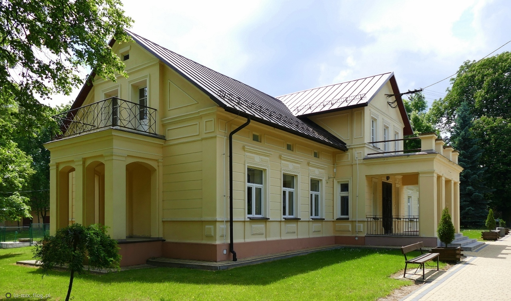
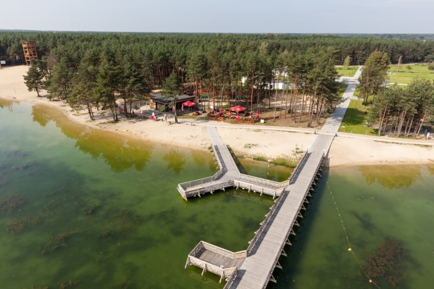
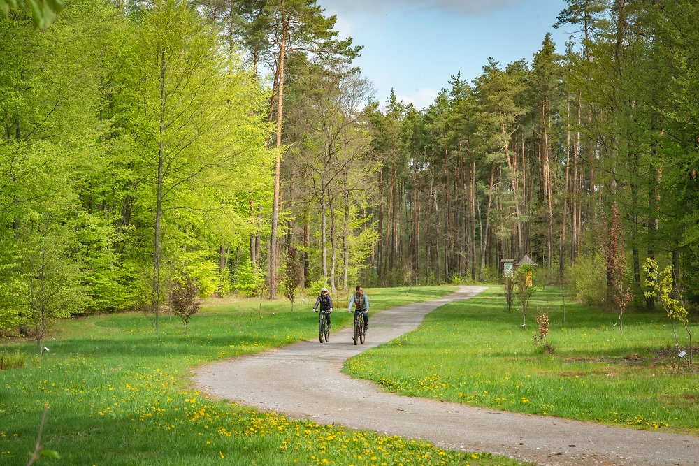

Jednodniowa wycieczka rowerowa – okolice Potoczka
Zapraszamy na jednodniową wycieczkę rowerową po zachodniej części województwa lubelskiego. Start i meta w Potoczku niedaleko Zdziechowic. Trasa prowadzi przez malownicze lasy, rezerwaty i wsie Roztocza Zachodniego i Lasów Janowskich. Długość trasy to około 68 km.
Plan trasy:
- Start: Potoczek
- Zdziechowice – spokojna wiejska trasa
- Potok Wielki – zabytkowy kościół i krótki postój
- Momoty Dolne – kaplica św. Anny i lasy janowskie
- Rezerwat Imielty Ług – piękne torfowiska i ścieżka przyrodnicza
- Janów Lubelski – Zalew Janowski, plaża, obiad
- Łążek Garncarski – dawna osada garncarzy i lasy
- Biała – malownicza trasa przez pola
- Meta: Powrót do Potoczka
Program wycieczki:
- 08:00 – Zbiórka w Potoczku
- 08:30 – Start wycieczki przez Zdziechowice i Potok Wielki
- 10:30 – Przerwa w Momotach Dolnych (kapliczka)
- 11:30 – Spacer po rezerwacie Imielty Ług
- 13:00 – Obiad i relaks nad Zalewem w Janowie Lubelskim
- 15:00 – Ruszamy dalej przez Łążek Garncarski
- 17:30 – Powrót przez Białą do Potoczka
- 18:00 – Zakończenie wycieczki
Co zabrać?
- Sprawny rower trekkingowy lub górski
- Kask, kamizelkę odblaskową
- Wodę, przekąski i lekki prowiant
- Telefon z mapą offline lub GPS
- Aparat – Imielty Ług i Zalew Janowski to idealne miejsca do zdjęć
Galeria zdjęć


